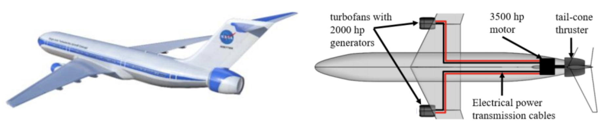

Subsonic aircraft 10% to 20% more fuel efficient
In October of 2021, the International Air Transport Association (IATA) pledged net-zero carbon emissions for the aviation industry by 2050. In the IATA technology roadmap, the IATA outlines radical departures from the standard tube-and-wing model with gas turbine jet engine propulsion by 2035, as aircraft and propulsion manufacturers incorporate new technologies.
NASA is working on three key technologies they plan to integrate into a demonstrator aircraft for hybrid-electric propulsion that drives a tail fan for boundary layer ingestion, providing a 10-12 percent improvement in fuel consumption. This boost is due to more efficient aerodynamics and additional thrust. NASA calls this concept STARC-ABL. The integrated tail fan and fuselage assembly has already undergone wind tunnel testing to characterize the performance. This concept is considered hybrid-electric propulsion because it requires a rotating generator on the gas turbine engine’s shaft to convert the power necessary to drive the tail fan. Currently, state-of-the-art engines can extract about 5 percent of power and the new design would increase that to 10-20 percent. NASA began testing the critical 1 MW high-efficiency motor in early 2021.
Dynamic Analysis of the STARC-ABL Propulsion System - NASA Technical Reports Server (NTRS)
Lastly, NASA’s HyTEC program is focused on shrinking the size of the turbofan core engine to further improve fuel efficiency. Current engine manufacturers have increased the size of inlet fan as much as possible without interfering with the stability of the aircraft. In fact, the fan diameter determines where on the wing the engines sit. For the 737-MAX, the engines were moved to accommodate the more efficient higher bypass engine. This reduced the craft’s stability, which led engineers to develop the MCAS software to compensate, ultimately causing two tragic crashes in 2018 and 2019 that grounded the aircraft for nearly two years.
NASA is focused on shrinking the core to further increase the bypass ratio (fan flow : core flow) without increasing the maximum fan diameter, thereby further improving the fuel efficiency of the engine. NASA’s efficiency goal for HyTEC is an additional 5-10 percent savings in fuel burn.